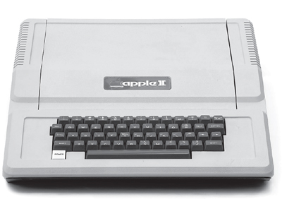

THE APPLE II
Dawn of a New Age

As Jobs walked the floor of the Personal Computer Festival, he came to the realization that Paul Terrell of the Byte Shop had been right: Personal computers should come in a complete package. The next Apple, he decided, needed to have a great case and a built-in keyboard, and be integrated end to end, from the power supply to the software. "My vision was to create the first fully packaged computer," he recalled. "We were no longer aiming for the handful of hobbyists who liked to assemble their own computers, who knew how to buy transformers and keyboards. For every one of them there were a thousand people who would want the machine to be ready to run."
In their hotel room on that Labor Day weekend of 1976, Wozniak tinkered with the prototype of the new machine, to be named the Apple II, that Jobs hoped would take them to this next level. They brought the prototype out only once, late at night, to test it on the color projection television in one of the conference rooms. Wozniak had come up with an ingenious way to goose the machine's chips into creating color, and he wanted to see if it would work on the type of television that uses a projector to display on a movie-like screen. "I figured a projector might have a different color circuitry that would choke on my color method," he recalled. "So I hooked up the Apple II to this projector and it worked perfectly." As he typed on his keyboard, colorful lines and swirls burst on the screen across the room. The only outsider who saw this first Apple II was the hotel's technician. He said he had looked at all the machines, and this was the one he would be buying.
To produce the fully packaged Apple II would require significant capital, so they considered selling the rights to a larger company. Jobs went to Al Alcorn and asked for the chance to pitch it to Atari's management. He set up a meeting with the company's president, Joe Keenan, who was a lot more conservative than Alcorn and Bushnell. "Steve goes in to pitch him, but Joe couldn't stand him," Alcorn recalled. "He didn't appreciate Steve's hygiene." Jobs was barefoot, and at one point put his feet up on a desk. "Not only are we not going to buy this thing," Keenan shouted, "but get your feet off my desk!" Alcorn recalled thinking, "Oh, well. There goes that possibility."
In September Chuck Peddle of the Commodore computer company came by the Jobs house to get a demo. "We'd opened Steve's garage to the sunlight, and he came in wearing a suit and a cowboy hat," Wozniak recalled. Peddle loved the Apple II, and he arranged a presentation for his top brass a few weeks later at Commodore headquarters. "You might want to buy us for a few hundred thousand dollars," Jobs said when they got there. Wozniak was stunned by this "ridiculous" suggestion, but Jobs persisted. The Commodore honchos called a few days later to say they had decided it would be cheaper to build their own machine. Jobs was not upset. He had checked out Commodore and decided that its leadership was "sleazy." Wozniak did not rue the lost money, but his engineering sensibilities were offended when the company came out with the Commodore PET nine months later. "It kind of sickened me. They made a real crappy product by doing it so quick. They could have had Apple."
The Commodore flirtation brought to the surface a potential conflict between Jobs and Wozniak: Were they truly equal in what they contributed to Apple and what they should get out of it? Jerry Wozniak, who exalted the value of engineers over mere entrepreneurs and marketers, thought most of the money should be going to his son. He confronted Jobs personally when he came by the Wozniak house. "You don't deserve shit," he told Jobs. "You haven't produced anything." Jobs began to cry, which was not unusual. He had never been, and would never be, adept at containing his emotions. He told Steve Wozniak that he was willing to call off the partnership. "If we're not fifty-fifty," he said to his friend, "you can have the whole thing." Wozniak, however, understood better than his father the symbiosis they had. If it had not been for Jobs, he might still be handing out schematics of his boards for free at the back of Homebrew meetings. It was Jobs who had turned his ingenious designs into a budding business, just as he had with the Blue Box. He agreed they should remain partners.
It was a smart call. To make the Apple II successful required more than just Wozniak's awesome circuit design. It would need to be packaged into a fully integrated consumer product, and that was Jobs's role.
He began by asking their erstwhile partner Ron Wayne to design a case. "I assumed they had no money, so I did one that didn't require any tooling and could be fabricated in a standard metal shop," he said. His design called for a Plexiglas cover attached by metal straps and a rolltop door that slid down over the keyboard.
Jobs didn't like it. He wanted a simple and elegant design, which he hoped would set Apple apart from the other machines, with their clunky gray metal cases. While haunting the appliance aisles at Macy's, he was struck by the Cuisinart food processors and decided that he wanted a sleek case made of light molded plastic. At a Homebrew meeting, he offered a local consultant, Jerry Manock, $1,500 to produce such a design. Manock, dubious about Jobs's appearance, asked for the money up front. Jobs refused, but Manock took the job anyway. Within weeks he had produced a simple foam-molded plastic case that was uncluttered and exuded friendliness. Jobs was thrilled.
Next came the power supply. Digital geeks like Wozniak paid little attention to something so analog and mundane, but Jobs decided it was a key component. In particular he wanted—as he would his entire career—to provide power in a way that avoided the need for a fan. Fans inside computers were not Zen-like; they distracted. He dropped by Atari to consult with Alcorn, who knew old-fashioned electrical engineering. "Al turned me on to this brilliant guy named Rod Holt, who was a chain-smoking Marxist who had been through many marriages and was an expert on everything," Jobs recalled. Like Manock and others meeting Jobs for the first time, Holt took a look at him and was skeptical. "I'm expensive," Holt said. Jobs sensed he was worth it and said that cost was no problem. "He just conned me into working," said Holt, who ended up joining Apple full-time.
Instead of a conventional linear power supply, Holt built one like those used in oscilloscopes. It switched the power on and off not sixty times per second, but thousands of times; this allowed it to store the power for far less time, and thus throw off less heat. "That switching power supply was as revolutionary as the Apple II logic board was," Jobs later said. "Rod doesn't get a lot of credit for this in the history books, but he should. Every computer now uses switching power supplies, and they all rip off Rod's design." For all of Wozniak's brilliance, this was not something he could have done. "I only knew vaguely what a switching power supply was," Woz admitted.
Jobs's father had once taught him that a drive for perfection meant caring about the craftsmanship even of the parts unseen. Jobs applied that to the layout of the circuit board inside the Apple II. He rejected the initial design because the lines were not straight enough.
This passion for perfection led him to indulge his instinct to control. Most hackers and hobbyists liked to customize, modify, and jack various things into their computers. To Jobs, this was a threat to a seamless end-to-end user experience. Wozniak, a hacker at heart, disagreed. He wanted to include eight slots on the Apple II for users to insert whatever smaller circuit boards and peripherals they might want. Jobs insisted there be only two, for a printer and a modem. "Usually I'm really easy to get along with, but this time I told him, ‘If that's what you want, go get yourself another computer,'" Wozniak recalled. "I knew that people like me would eventually come up with things to add to any computer." Wozniak won the argument that time, but he could sense his power waning. "I was in a position to do that then. I wouldn't always be."
All of this required money. "The tooling of this plastic case was going to cost, like, $100,000," Jobs said. "Just to get this whole thing into production was going to be, like, $200,000." He went back to Nolan Bushnell, this time to get him to put in some money and take a minority equity stake. "He asked me if I would put $50,000 in and he would give me a third of the company," said Bushnell. "I was so smart, I said no. It's kind of fun to think about that, when I'm not crying."
Bushnell suggested that Jobs try Don Valentine, a straight-shooting former marketing manager at National Semiconductor who had founded Sequoia Capital, a pioneering venture capital firm. Valentine arrived at the Jobses' garage in a Mercedes wearing a blue suit, button-down shirt, and rep tie. His first impression was that Jobs looked and smelled odd. "Steve was trying to be the embodiment of the counterculture. He had a wispy beard, was very thin, and looked like Ho Chi Minh."
Valentine, however, did not become a preeminent Silicon Valley investor by relying on surface appearances. What bothered him more was that Jobs knew nothing about marketing and seemed content to peddle his product to individual stores one by one. "If you want me to finance you," Valentine told him, "you need to have one person as a partner who understands marketing and distribution and can write a business plan." Jobs tended to be either bristly or solicitous when older people offered him advice. With Valentine he was the latter. "Send me three suggestions," he replied. Valentine did, Jobs met them, and he clicked with one of them, a man named Mike Markkula, who would end up playing a critical role at Apple for the next two decades.
Markkula was only thirty-three, but he had already retired after working at Fairchild and then Intel, where he made millions on his stock options when the chip maker went public. He was a cautious and shrewd man, with the precise moves of someone who had been a gymnast in high school, and he excelled at figuring out pricing strategies, distribution networks, marketing, and finance. Despite being slightly reserved, he had a flashy side when it came to enjoying his newly minted wealth. He built himself a house in Lake Tahoe and later an outsize mansion in the hills of Woodside. When he showed up for his first meeting at Jobs's garage, he was driving not a dark Mercedes like Valentine, but a highly polished gold Corvette convertible. "When I arrived at the garage, Woz was at the workbench and immediately began showing off the Apple II," Markkula recalled. "I looked past the fact that both guys needed a haircut and was amazed by what I saw on that workbench. You can always get a haircut."
Jobs immediately liked Markkula. "He was short and he had been passed over for the top marketing job at Intel, which I suspect made him want to prove himself." He also struck Jobs as decent and fair. "You could tell that if he could screw you, he wouldn't. He had a real moral sense to him." Wozniak was equally impressed. "I thought he was the nicest person ever," he recalled. "Better still, he actually liked what we had!"
Markkula proposed to Jobs that they write a business plan together. "If it comes out well, I'll invest," Markkula said, "and if not, you've got a few weeks of my time for free." Jobs began going to Markkula's house in the evenings, kicking around projections and talking through the night. "We made a lot of assumptions, such as about how many houses would have a personal computer, and there were nights we were up until 4 a.m.," Jobs recalled. Markkula ended up writing most of the plan. "Steve would say, ‘I will bring you this section next time,' but he usually didn't deliver on time, so I ended up doing it."
Markkula's plan envisioned ways of getting beyond the hobbyist market. "He talked about introducing the computer to regular people in regular homes, doing things like keeping track of your favorite recipes or balancing your checkbook," Wozniak recalled. Markkula made a wild prediction: "We're going to be a Fortune 500 company in two years," he said. "This is the start of an industry. It happens once in a decade." It would take Apple seven years to break into the Fortune 500, but the spirit of Markkula's prediction turned out to be true.
Markkula offered to guarantee a line of credit of up to $250,000 in return for being made a one-third equity participant. Apple would incorporate, and he along with Jobs and Wozniak would each own 26% of the stock. The rest would be reserved to attract future investors. The three met in the cabana by Markkula's swimming pool and sealed the deal. "I thought it was unlikely that Mike would ever see that $250,000 again, and I was impressed that he was willing to risk it," Jobs recalled.
Now it was necessary to convince Wozniak to come on board full-time. "Why can't I keep doing this on the side and just have HP as my secure job for life?" he asked. Markkula said that wouldn't work, and he gave Wozniak a deadline of a few days to decide. "I felt very insecure in starting a company where I would be expected to push people around and control what they did," Wozniak recalled. "I'd decided long ago that I would never become someone authoritative." So he went to Markkula's cabana and announced that he was not leaving HP.
Markkula shrugged and said okay. But Jobs got very upset. He cajoled Wozniak; he got friends to try to convince him; he cried, yelled, and threw a couple of fits. He even went to Wozniak's parents' house, burst into tears, and asked Jerry for help. By this point Wozniak's father had realized there was real money to be made by capitalizing on the Apple II, and he joined forces on Jobs's behalf. "I started getting phone calls at work and home from my dad, my mom, my brother, and various friends," Wozniak recalled. "Every one of them told me I'd made the wrong decision." None of that worked. Then Allen Baum, their Buck Fry Club mate at Homestead High, called. "You really ought to go ahead and do it," he said. He argued that if he joined Apple full-time, he would not have to go into management or give up being an engineer. "That was exactly what I needed to hear," Wozniak later said. "I could stay at the bottom of the organization chart, as an engineer." He called Jobs and declared that he was now ready to come on board.
On January 3, 1977, the new corporation, the Apple Computer Co., was officially created, and it bought out the old partnership that had been formed by Jobs and Wozniak nine months earlier. Few people noticed. That month the Homebrew surveyed its members and found that, of the 181 who owned personal computers, only six owned an Apple. Jobs was convinced, however, that the Apple II would change that.
Markkula would become a father figure to Jobs. Like Jobs's adoptive father, he would indulge Jobs's strong will, and like his biological father, he would end up abandoning him. "Markkula was as much a father-son relationship as Steve ever had," said the venture capitalist Arthur Rock. He began to teach Jobs about marketing and sales. "Mike really took me under his wing," Jobs recalled. "His values were much aligned with mine. He emphasized that you should never start a company with the goal of getting rich. Your goal should be making something you believe in and making a company that will last."
Markkula wrote his principles in a one-page paper titled "The Apple Marketing Philosophy" that stressed three points. The first was empathy, an intimate connection with the feelings of the customer: "We will truly understand their needs better than any other company." The second was focus: "In order to do a good job of those things that we decide to do, we must eliminate all of the unimportant opportunities." The third and equally important principle, awkwardly named, was impute. It emphasized that people form an opinion about a company or product based on the signals that it conveys. "People DO judge a book by its cover," he wrote. "We may have the best product, the highest quality, the most useful software etc.; if we present them in a slipshod manner, they will be perceived as slipshod; if we present them in a creative, professional manner, we will impute the desired qualities."
For the rest of his career, Jobs would understand the needs and desires of customers better than any other business leader, he would focus on a handful of core products, and he would care, sometimes obsessively, about marketing and image and even the details of packaging. "When you open the box of an iPhone or iPad, we want that tactile experience to set the tone for how you perceive the product," he said. "Mike taught me that."
The first step in this process was convincing the Valley's premier publicist, Regis McKenna, to take on Apple as a client. McKenna was from a large working-class Pittsburgh family, and bred into his bones was a steeliness that he cloaked with charm. A college dropout, he had worked for Fairchild and National Semiconductor before starting his own PR and advertising firm. His two specialties were doling out exclusive interviews with his clients to journalists he had cultivated and coming up with memorable ad campaigns that created brand awareness for products such as microchips. One of these was a series of colorful magazine ads for Intel that featured racing cars and poker chips rather than the usual dull performance charts. These caught Jobs's eye. He called Intel and asked who created them. "Regis McKenna," he was told. "I asked them what Regis McKenna was," Jobs recalled, "and they told me he was a person." When Jobs phoned, he couldn't get through to McKenna. Instead he was transferred to Frank Burge, an account executive, who tried to put him off. Jobs called back almost every day.
Burge finally agreed to drive out to the Jobs garage. "Holy Christ, this guy is going to be something else," he recalled thinking. "What's the least amount of time I can spend with this clown without being rude." Then, when he was confronted with the unwashed and shaggy Jobs, two things hit him: "First, he was an incredibly smart young man. Second, I didn't understand a fiftieth of what he was talking about."
So Jobs and Wozniak were invited to have a meeting with, as his impish business cards read, "Regis McKenna, himself." This time it was the normally shy Wozniak who became prickly. McKenna glanced at an article Wozniak was writing about Apple and suggested that it was too technical and needed to be livened up. "I don't want any PR man touching my copy," Wozniak snapped. McKenna suggested it was time for them to leave his office. "But Steve called me back right away and said he wanted to meet again," McKenna recalled. "This time he came without Woz, and we hit it off."
McKenna had his team get to work on brochures for the Apple II. The first thing they did was to replace Ron Wayne's ornate Victorian woodcut-style logo, which ran counter to McKenna's colorful and playful advertising style. So an art director, Rob Janoff, was assigned to create a new one. "Don't make it cute," Jobs ordered. Janoff came up with a simple apple shape in two versions, one whole and the other with a bite taken out of it. The first looked too much like a cherry, so Jobs chose the one with a bite. He also picked a version that was striped in six colors, with psychedelic hues sandwiched between whole-earth green and sky blue, even though that made printing the logo significantly more expensive. Atop the brochure McKenna put a maxim, often attributed to Leonardo da Vinci, that would become the defining precept of Jobs's design philosophy: "Simplicity is the ultimate sophistication."
The introduction of the Apple II was scheduled to coincide with the first West Coast Computer Faire, to be held in April 1977 in San Francisco, organized by a Homebrew stalwart, Jim Warren. Jobs signed Apple up for a booth as soon as he got the information packet. He wanted to secure a location right at the front of the hall as a dramatic way to launch the Apple II, and so he shocked Wozniak by paying $5,000 in advance. "Steve decided that this was our big launch," said Wozniak. "We would show the world we had a great machine and a great company."
It was an application of Markkula's admonition that it was important to "impute" your greatness by making a memorable impression on people, especially when launching a new product. That was reflected in the care that Jobs took with Apple's display area. Other exhibitors had card tables and poster board signs. Apple had a counter draped in black velvet and a large pane of backlit Plexiglas with Janoff's new logo. They put on display the only three Apple IIs that had been finished, but empty boxes were piled up to give the impression that there were many more on hand.
Jobs was furious that the computer cases had arrived with tiny blemishes on them, so he had his handful of employees sand and polish them. The imputing even extended to gussying up Jobs and Wozniak. Markkula sent them to a San Francisco tailor for three-piece suits, which looked faintly ridiculous on them, like tuxes on teenagers. "Markkula explained how we would all have to dress up nicely, how we should appear and look, how we should act," Wozniak recalled.
It was worth the effort. The Apple II looked solid yet friendly in its sleek beige case, unlike the intimidating metal-clad machines and naked boards on the other tables. Apple got three hundred orders at the show, and Jobs met a Japanese textile maker, Mizushima Satoshi, who became Apple's first dealer in Japan.
The fancy clothes and Markkula's injunctions could not, however, stop the irrepressible Wozniak from playing some practical jokes. One program that he displayed tried to guess people's nationality from their last name and then produced the relevant ethnic jokes. He also created and distributed a hoax brochure for a new computer called the "Zaltair," with all sorts of fake ad-copy superlatives like "Imagine a car with five wheels." Jobs briefly fell for the joke and even took pride that the Apple II stacked up well against the Zaltair in the comparison chart. He didn't realize who had pulled the prank until eight years later, when Woz gave him a framed copy of the brochure as a birthday gift.
Apple was now a real company, with a dozen employees, a line of credit, and the daily pressures that can come from customers and suppliers. It had even moved out of the Jobses' garage, finally, into a rented office on Stevens Creek Boulevard in Cupertino, about a mile from where Jobs and Wozniak went to high school.
Jobs did not wear his growing responsibilities gracefully. He had always been temperamental and bratty. At Atari his behavior had caused him to be banished to the night shift, but at Apple that was not possible. "He became increasingly tyrannical and sharp in his criticism," according to Markkula. "He would tell people, ‘That design looks like shit.'" He was particularly rough on Wozniak's young programmers, Randy Wigginton and Chris Espinosa. "Steve would come in, take a quick look at what I had done, and tell me it was shit without having any idea what it was or why I had done it," said Wigginton, who was just out of high school.
There was also the issue of his hygiene. He was still convinced, against all evidence, that his vegan diets meant that he didn't need to use a deodorant or take regular showers. "We would have to literally put him out the door and tell him to go take a shower," said Markkula. "At meetings we had to look at his dirty feet." Sometimes, to relieve stress, he would soak his feet in the toilet, a practice that was not as soothing for his colleagues.
Markkula was averse to confrontation, so he decided to bring in a president, Mike Scott, to keep a tighter rein on Jobs. Markkula and Scott had joined Fairchild on the same day in 1967, had adjoining offices, and shared the same birthday, which they celebrated together each year. At their birthday lunch in February 1977, when Scott was turning thirty-two, Markkula invited him to become Apple's new president.
On paper he looked like a great choice. He was running a manufacturing line for National Semiconductor, and he had the advantage of being a manager who fully understood engineering. In person, however, he had some quirks. He was overweight, afflicted with tics and health problems, and so tightly wound that he wandered the halls with clenched fists. He also could be argumentative. In dealing with Jobs, that could be good or bad.
Wozniak quickly embraced the idea of hiring Scott. Like Markkula, he hated dealing with the conflicts that Jobs engendered. Jobs, not surprisingly, had more conflicted emotions. "I was only twenty-two, and I knew I wasn't ready to run a real company," he said. "But Apple was my baby, and I didn't want to give it up." Relinquishing any control was agonizing to him. He wrestled with the issue over long lunches at Bob's Big Boy hamburgers (Woz's favorite place) and at the Good Earth restaurant (Jobs's). He finally acquiesced, reluctantly.
Mike Scott, called "Scotty" to distinguish him from Mike Markkula, had one primary duty: managing Jobs. This was usually accomplished by Jobs's preferred mode of meeting, which was taking a walk together. "My very first walk was to tell him to bathe more often," Scott recalled. "He said that in exchange I had to read his fruitarian diet book and consider it as a way to lose weight." Scott never adopted the diet or lost much weight, and Jobs made only minor modifications to his hygiene. "Steve was adamant that he bathed once a week, and that was adequate as long as he was eating a fruitarian diet."
Jobs's desire for control and disdain for authority was destined to be a problem with the man who was brought in to be his regent, especially when Jobs discovered that Scott was one of the only people he had yet encountered who would not bend to his will. "The question between Steve and me was who could be most stubborn, and I was pretty good at that," Scott said. "He needed to be sat on, and he sure didn't like that." Jobs later said, "I never yelled at anyone more than I yelled at Scotty."
An early showdown came over employee badge numbers. Scott assigned #1 to Wozniak and #2 to Jobs. Not surprisingly, Jobs demanded to be #1. "I wouldn't let him have it, because that would stoke his ego even more," said Scott. Jobs threw a tantrum, even cried. Finally, he proposed a solution. He would have badge #0. Scott relented, at least for the purpose of the badge, but the Bank of America required a positive integer for its payroll system and Jobs's remained #2.
There was a more fundamental disagreement that went beyond personal petulance. Jay Elliot, who was hired by Jobs after a chance meeting in a restaurant, noted Jobs's salient trait: "His obsession is a passion for the product, a passion for product perfection." Mike Scott, on the other hand, never let a passion for the perfect take precedence over pragmatism. The design of the Apple II case was one of many examples. The Pantone company, which Apple used to specify colors for its plastic, had more than two thousand shades of beige. "None of them were good enough for Steve," Scott marveled. "He wanted to create a different shade, and I had to stop him." When the time came to tweak the design of the case, Jobs spent days agonizing over just how rounded the corners should be. "I didn't care how rounded they were," said Scott, "I just wanted it decided." Another dispute was over engineering benches. Scott wanted a standard gray; Jobs insisted on special-order benches that were pure white. All of this finally led to a showdown in front of Markkula about whether Jobs or Scott had the power to sign purchase orders; Markkula sided with Scott. Jobs also insisted that Apple be different in how it treated customers. He wanted a one-year warranty to come with the Apple II. This flabbergasted Scott; the usual warranty was ninety days. Again Jobs dissolved into tears during one of their arguments over the issue. They walked around the parking lot to calm down, and Scott decided to relent on this one.
Wozniak began to rankle at Jobs's style. "Steve was too tough on people. I wanted our company to feel like a family where we all had fun and shared whatever we made." Jobs, for his part, felt that Wozniak simply would not grow up. "He was very childlike. He did a great version of BASIC, but then never could buckle down and write the floating-point BASIC we needed, so we ended up later having to make a deal with Microsoft. He was just too unfocused."
But for the time being the personality clashes were manageable, mainly because the company was doing so well. Ben Rosen, the analyst whose newsletters shaped the opinions of the tech world, became an enthusiastic proselytizer for the Apple II. An independent developer came up with the first spreadsheet and personal finance program for personal computers, VisiCalc, and for a while it was available only on the Apple II, turning the computer into something that businesses and families could justify buying. The company began attracting influential new investors. The pioneering venture capitalist Arthur Rock had initially been unimpressed when Markkula sent Jobs to see him. "He looked as if he had just come back from seeing that guru he had in India," Rock recalled, "and he kind of smelled that way too." But after Rock scoped out the Apple II, he made an investment and joined the board.
The Apple II would be marketed, in various models, for the next sixteen years, with close to six million sold. More than any other machine, it launched the personal computer industry. Wozniak deserves the historic credit for the design of its awe-inspiring circuit board and related operating software, which was one of the era's great feats of solo invention. But Jobs was the one who integrated Wozniak's boards into a friendly package, from the power supply to the sleek case. He also created the company that sprang up around Wozniak's machines. As Regis McKenna later said, "Woz designed a great machine, but it would be sitting in hobby shops today were it not for Steve Jobs." Nevertheless most people considered the Apple II to be Wozniak's creation. That would spur Jobs to pursue the next great advance, one that he could call his own.